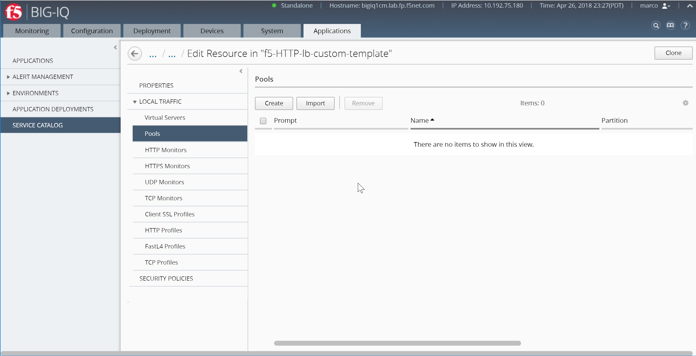
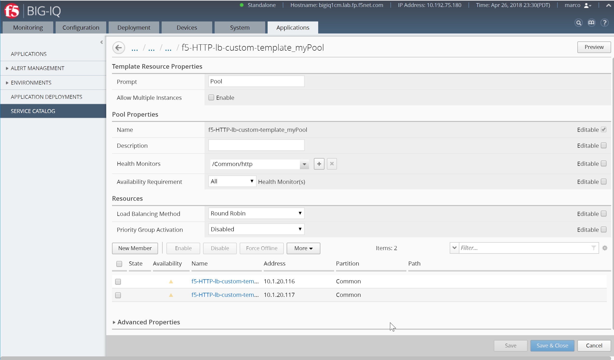
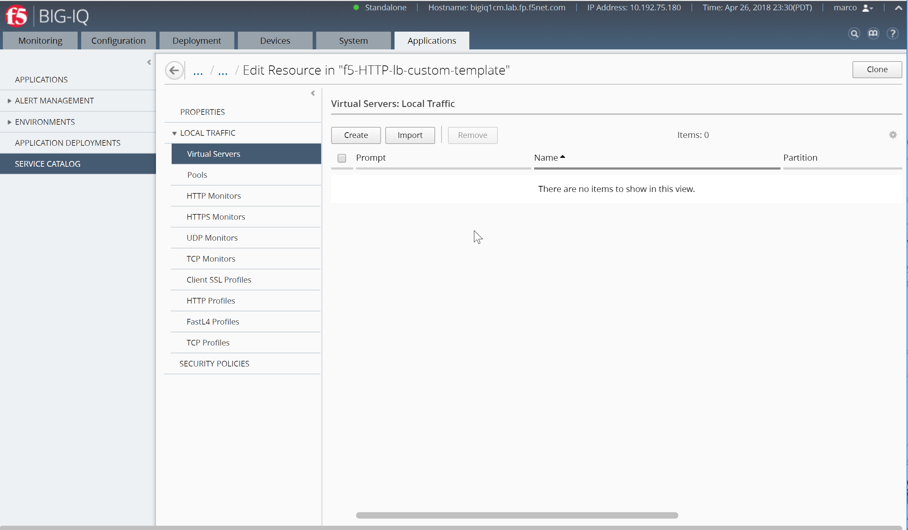
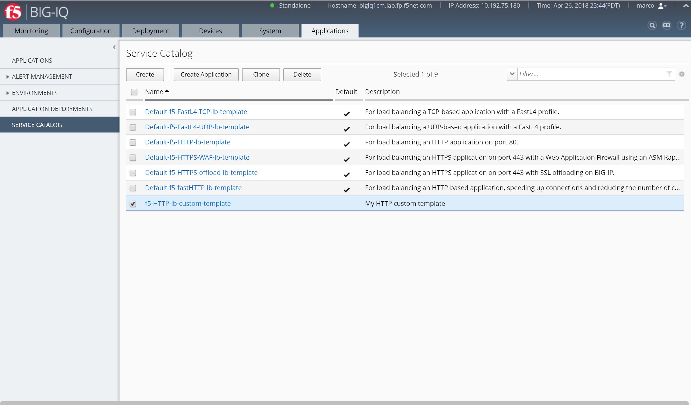
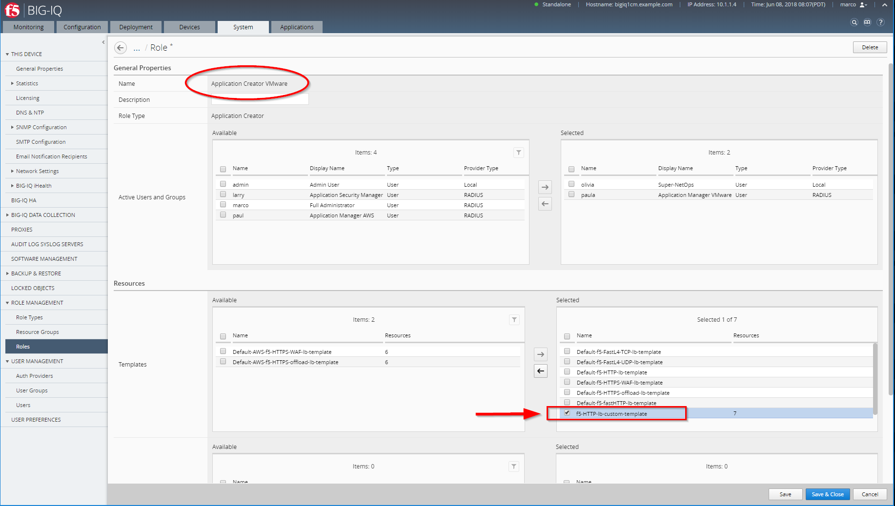

F5 BIG-IQ & Cloud Edition Lab > Class 1: BIG-IQ Application Management and AS3 (Cloud Edition) > Module 4: BIG-IQ Custom Application Templates & Deployment (Service Catalog) Source | Edit on
Lab 4.1: Custom Service Catalog Template¶
Warning
Starting BIG-IQ 6.1, AS3 should be the preferred method to deploy application services through BIG-IQ.
An application template allows you to specify a set of objects that define an application that you can then deploy to your BIG-IP device(s).
You can think of the objects in an application template as a baseline that serves as a starting place for creating a new application.
For example, if you create a template with a virtual server, two pools, and 5 nodes, then when you create a new application using that template each of those objects (with the default values you specified in the template) are included.
When you define the application, you can omit or include these objects. Parameters you define as not visible are included using the default values specified in the application template. This allows you to maintain a consistent environment. Parameters that you define as editable are visible and can be revised.
Connect as david (or marco) to create a Custom Service Template, go to Applications > SERVICE CATALOG, click on Create.
1. In the Name field, type in a name for the application template you are creating. In the Description field (optional), type in a brief description for the application template you are creating to help identify it when you want to use it later.
Name:
f5-HTTP-lb-custom-templateDescription:
My HTTP custom template
{kind=link}
Save the template, click Save
3. Now, define the default objects for this template. You can either create these objects manually, or you can import objects that already exist on this BIG-IQ. On the left, under Properties, expand Local Traffic and then select the object type you want to define.
4. To add a default pool, you would expand Local Traffic, and then click Pools. Click Create. The screen you use to define the selected object type (for example New Pool) displays.
{kind=link}
Create your pool with the following parameters:
Prompt:
PoolName:
myPoolHealth Monitor:
/Common/http

Note
Nodes and pool members are “device specific objects”
Save the template, click Save

Create your nodes with the following parameters:
Prompt:
ServerAllow Multiple Instances:
EnableName and Address:
10.1.20.116
{kind=link}
Repeat the same with the 2nd node:
Prompt:
ServerAllow Multiple Instances:
EnableName and Address:
10.1.20.117
If you want applications created with this template to be able to include more than one copy of the object you are adding, select Enabled for Allow Multiple Instances.
Save the template, click Save
Once both nodes are added to the Pool template, you should see both nodes attached to the pool template.
{kind=link}
Save the template, click Save & Close
9. To add a default virtual server, you would expand Local Traffic, and then click Virtual Servers. Click Create. The screen you use to define the selected object type (for example New Virtual Server) displays.
{kind=link}
In the Prompt box, type the text string that you want to display for this object when someone uses this template to create a new application. To specify a virtual server, you only need to provide a name, a destination address, and a service port, even though there are another fifty or so settings you could specify.
Create your virtual server with the following parameters:
Prompt:
Load BalancerName Virtual Server:
vs_site16.example.comSource Address:
0.0.0.0/0Destination Address:
10.1.10.116Destination Network Mask:
255.255.255.255Service Port:
80Protocol Profile (Client):
/Common/f5-tcp-wanProtocol Profile (Server):
/Common/f5-tcp-lanHTTP Profile:
/Common/httpSource Address Translation:
Auto-MapDefault Pool:
# /Common/f5-HTTP-lb-custom-template_MyPool
Note
Do not apply the default ASM Policy.
Warning
If the Application is created on AWS, Destination Address and Network Mask needs to be set to 0.0.0.0
{kind=link}
Specify all of the default parameters that you want to define for this object. Before you can add an object to the template, you must specify at least the required parameters for that object type.
For each parameter that you specify, determine whether you want the person who deploys an application using this template to be able to edit the default settings you are defining.
For parameters that you want to allow to be changed, select Editable. Other parameters will be present (with the settings that you specify here), but they will not be visible in the user interface.
Only the parameters you select will appear in the user interface when someone deploys an application using this template. As you specify parameter values for this template object, you can click Preview in the upper right corner to see what the user interface will look like when someone uses this template to deploy an application.

Save the template, click Save & Close
Your custom template is now showing in the Service Catalog.
{kind=link}
When you finish specifying parameters for this object, click Save & Close. BIG-IQ adds the object you defined to the list of objects in this template. When you finish adding an object to a template, you can use it to create an application.
[New 6.0.1] Publish your custom template after creation.

12. In order to allow Paula to use the custom application template, go to : System > Role Management > Roles and select CUSTOM ROLES > Application Roles > Application Creator VMware role (already assigned to Paula). Select the Template f5-HTTP-lb-custom-template, drag it to the right.
{kind=link}
Click on Save & Close